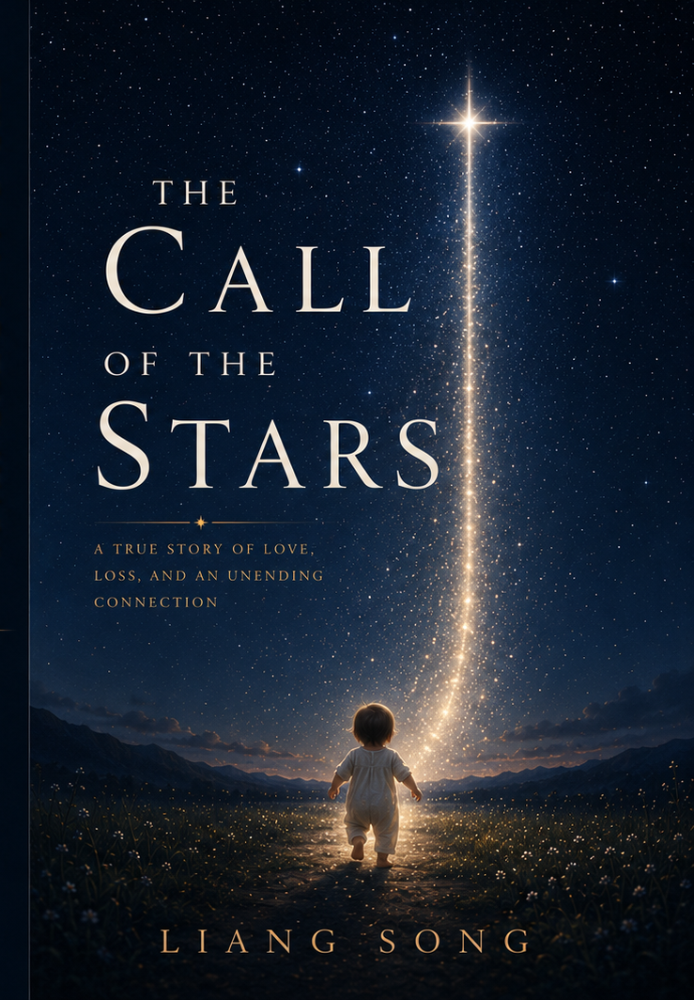

A True Story of Love, Loss, and an Unending Connection
When Anzhe and Jiyang begin their life together in the bustling city of Jiangcheng, they carry with them the ordinary hopes of any young couple — a home, a family, a future built quietly, day by day. But life, as it so often does, has other plans.
Spanning two decades of love, longing, and irreversible loss, The Call of the Stars is an autobiographical novel that traces one family's journey through the joys and sorrows that shape a life. It is a story about what we carry, what we cannot hold on to, and the strange, luminous way the people we lose continue to call to us — long after they are gone.
In the second half of the book, the author ventures beyond the boundaries of the novel itself, reflecting on life, death, and the emerging emotional bond between humanity and artificial intelligence — a meditation as surprising as it is profound.
Read on Amazon